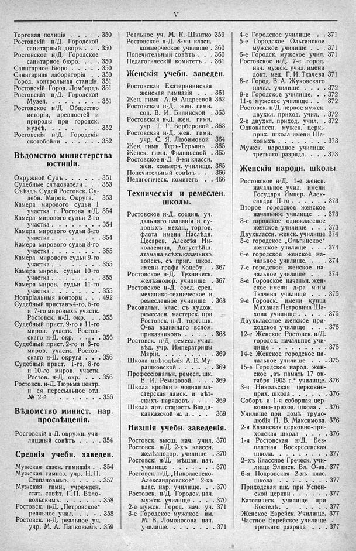

Лист источника 35
Скан

Распознанный текст
V
Торговая полиція . . . . 350
Ростовскій н/Д. Городской
санитарный дворъ . . . 350
Ростовское н/Д. Городское
санитарное бюро. . . . 350
Санитарное Бюро . . . . 350
Санитарная лабораторія . . 350
Город. контрольная станція. 351
Ростовскій Город. Ломбардъ 351
Ростовскій н/Д. Городской
Музей. . . . . . . . . 351
Ростовское н/Д. Общество
исторіи, древностей и
природы при городск.
музеѣ. . . . . . . . . 352
Ростовскія н/Д. Городскія
скотобойни . . . . . . 352
Вѣдомство министерства
юстиціи.
Окружной Судъ . . . . . . 351
Судебные слѣдователи . . . 353
Съѣздъ Судей Ростовск. Су-
дебн. Миров. Округа. 353
Камера мирового судьи 1
участка г. Ростова н/Д. 354
Камера мирового судьи 2-го
участка . . . . . . . . 354
Камера мирового судьи 3-го
участка . . . . . . . . 354
Камера мирового судьи 8-го
участка . . . . . . . . 355
Камера мирового судьи 9-го
участка . . . . . . . . 355
Камера миров. судьи 10-го
участка . . . . . . . . 355
Камера миров. судьи 11-го
участка . . . . . . . . 355
Нотаріальныя конторы . . . 492
Судебный приставъ 4-го, 5-го
и 7-го мировыхъ участк.
Ростовск. н-Д. окр. . . . 355
Судебный прист. 9-го и 11-го
миров. участк. Ростов-
скаго н-Д. окр. . . . . 356
Судебный прист. 2-го и 3-го
миров. участк. Ростов-
скаго н-Д. округа . . . 356
Судебный прист. 1-го, 8-го
и 10-го миров. участк.
Ростов. н-Д. окр. . . . 356
Ростовск. н-Д. Тюрьма центр.
и ея пересыльное отд.
№ 2-й . . . . . . . . . 356
Вѣдомство минист. нар.
просвѣщенія.
Ростовскій н-Д. окружн. учи-
лищный совѣтъ . . . . 354
Среднія учебн. заведен.
Мужская казен. гимназія . . 354
Мужская гимназ. учр. Н. П.
Степановымъ . . . . . 357
Мужская гимн., учрежден.
стат. совѣт. Г. П. Бѣло-
вольскимъ. . . . . . . 358
Ростовск. н-Д. „Петровское“
реальное учил. . . . . 358
Ростовск. н-Д. реальное уч.
учр. М. А. Папковымъ . 359
Реальное уч. М. К. Шкитко 359
Ростовское н-Д. 8-ми класн.
коммерческое училище . 360
Попечительный совѣтъ . . . 360
Педагогическій комитетъ . . 361
Женскія учебн. заведен.
Ростовская Екатерининская
женская гимназія . . . 361
Жен. гимн. А. Ѳ. Андреевой 362
Ростовская н-Д. жен. гимн.
сод. В. И. Билинской . 363
Ростовская н-Д. жен. гимн.
учр. Т. Г. Берберовой . 363
Ростовская н-Д. жен. гимн.
учр. С. Я. Любимовой . 364
Жен. гимн. Теръ-Терьянъ . 365
Женск. гимн. Филипьевой . 365
Ростовское н-Д. 8-ми классн.
жен. коммерч. училище. 365
Попечительный совѣтъ . . . 366
Педагогическ. комитетъ . . 466
Техническія и ремеслен.
школы.
Ростовское н-Д. соедин. уч.
дальняго плаванія и су-
довыхъ механ., торгов.
флота имени Наслѣдн.
Цесарев. Алексѣя Ни-
колаевича, Августѣйш.
атамана всѣхъ казачьихъ
войскъ, съ приг. школ.
имени графа Коцебу . . 367
Ростовское н-Д. Техническ.
желѣзнодор. училище . 367
Ростовское н-Д. соед. сред.
механико-техническое и
ремесленное училище . 368
Рисовальн. клас. съ худож.
ремеслен. мастерск. при
Ростовск. н-Д. торг. шк.
О-ва взаимнаго вспом.
приказчиковъ . . . . . 368
Ростовск. н/Д. ремесл. учил.
вѣд. учр. Императрицы
Маріи. . . . . . . . . 369
Школа цвѣтодѣлія А. Е. Му-
рашковской . . . . . . 369
Профессіональн. ремесл. шк.
Е. И. Ремизовой. . . . 369
Школа кройки и модная ма-
стерская дамск. и дѣт-
скихъ нарядовъ . . . . 369
Школа арт. старостъ Влади-
кавказской ж. д. . . . 369
Низшія учебн. заведенія.
Ростовск. высш. нач. учил. 370
Ростовск. н/Д. 2-хъ классн.
желѣзнодор. училище . 370
Ростовск. н/Д. мѣщан. нач.
училище . . . . . . . 370
Ростовск. н/Д. „Николаевско-
Александровское“ 2-хъ
клас. нар. училище. . . 370
Ростовск. н/Д. Городск. нач.
мужск. училище . . . . 370
2-е мужск. Город. нач. уч. 371
3-е Городское мужское им.
М. В. Ломоносова нач.
училище. . . . . . . . 371
4-е Городское училище . . 371
5-е Городское Ольгинское
мужское училище . . . 371
6-е Городск. мужское учил. 371
Ростовское н/Д. 7-е город.
нач. мужск. учил. имени
докт. мед. Г. И. Ткачева 371
8-е Город. В. А. Жуковскаго
начал. училище . . . . 372
9-е Городское училище. . . 372
11-е мужское училище . . . 372
Ростовск. н/Д. первое мужск.
двухкл. приход. учил. . 372
2-е двухкл. приход. учил. . 372
Одноклассн. мужск. церк.-
прих. школа имени Ша-
ховыхъ . . . . . . . . 373
Мужск. народное училище
третьяго разряда. . . . 373
Женскія народн. школы.
Ростовское н/Д. 1-е женск.
начальное учил. имени
Государя Импер. Алек-
сандра II-го . . . . . . 373
Второе городское женское
начальное училище . . . 373
3-е городское одноклассное
женское училище . . . 373
Двухклассн. женск. училище 374
5-е городское „Ольгинское“
женское училище . . . 374
6-е городское женское на-
чальное училище. . . . 374
7-е городское женское на-
чальное училище . . . 374
8-е Городское начальн. жен-
ское имени д-ра м-ны
Ткачева училище . . . 375
9-е Городск. имени купца
Михаила Петровича Ша-
хова училище . . . . . 375
Двухклассное женское при-
ходское училище . . . 375
12-е Женское Ростовск. н/Д.
городск. начальное учи-
лище . . . . . . . . . 375
14-е Женское городское на-
чальное училище . . . 375
15-е Городское народ. жен-
ское „въ память 17 ок-
тября 1905 г.“ училище. 376
3-я Никольская церковно-
прих. школа . . . . . . 376
Соборъ и 1-я соборная цер-
ковно-приход. школа . . 376
Училище при домѣ трудо-
любія П. В. Максимова. 376
2-я Казанская церковно-при-
ходская школа . . . . 376
1-я Ростовская н/Д. Без-
платная Воскресенская
школа. . . . . . . . . 377
2-хъ Классное Греческ. учи-
лище Элинск. Бл. О-ва. 377
6-я Покровская 2-хъ клас.
школа . . . . . . . . 377
Приходская шк. при Успен-
ской церкви . . . . . . 377
Католическ. училище при
Костелѣ. . . . . . . 377
Женское Еврейск. Училище. 377
Частное Еврейское училище
третьяго разряда . . . 377